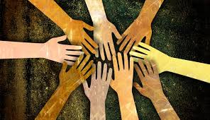

Social health is a term that refers to the ways in which people create healthy and positive interpersonal relationships with one another.  Having good social health helps people improve their emotional wellbeing and feel supported in their daily lives. The social health definition is a broad one; there are many different elements of social health that come together to create a coherent picture of positive relationships. Our social health and wellness is measured by the relationships and connections we have to others in the world around us. Most mammals (and other animals) are inherently social creatures, and social relationships help us survive and thrive in today’s society. It’s not just about the quantity friends you have. I could have 500 friends on Facebook, but if I don’t have at least a few quality friendships, my support system--and therefore social health- won’t be very strong.Health also includes how individual’s natural environmentaround them is. The role of the community as a whole acquires great importance for enhancing and maintaining the quality of the health of individuals. Although there are many dimensions of social health, we shall discuss below the impact of social customs on our health, the need to protect natural resources and the empowerment of community for healthy living.
The social determinants of health (SDH) are the non-medical factors that influence health outcomes. They are the conditions in which people are born, grow, work, live, and age, and the wider set of forces and systems shaping the conditions of daily life. These forces and systems include economic policies and systems, development agendas, social norms, social policies and political systems.
The following list provides examples of the social determinants of health, which can influence health equity in positive and negative ways:
Research shows that the social determinants can be more important
than health care or lifestyle choices in influencing health. For example,
numerous studies suggest that SDH account for between 30-55% of health
outcomes. In addition, estimates show that the contribution of sectors
outside health to population health outcomes exceeds the contribution
from the health sector.
Addressing SDH appropriately is fundamental for improving health and
reducing longstanding inequities in health, which requires action by all
sectors and civil society.